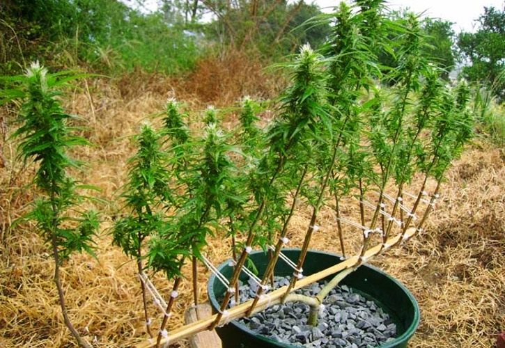

SOG es la abreviatura de Sea Of Green, que en castellano se traduce como «Mar Verde». Su nombre ya nos da muchas pistas de como va a ser el cultivo realizado con esta técnica, un pequeño mar verde que ocupe todo nuestro armario de cultivo. Con este tipo de técnica se consigue obtener muchísima más producción por metro cuadrado cultivado que con cualquier otra técnica. Podríamos decir que es una técnica especifica para obtener la máxima producción.
EL SOG consiste en poner muchos esquejes perfectamente enraizados, en macetas individuales por supuesto, ocupando toda la superficie de cultivo. De forma que en un metro cuadrado podremos poner de 25 a 50 esquejes con sus correspondientes macetas (normalmente de tres litros, aunque puede variar según necesidades y sustrato). Lo que se quiere conseguir con un SOG es un cultivo de pequeña altura consiguiendo muchos cogollos principales, que son los mas grandes. Con esto conseguiremos mucha más producción que con otras técnicas, pero también supone dedicar más horas de trabajo al cultivo.
Para este tipo de técnica de cultivo lo recomendable es utilizar variedades índicas o híbridos de poco crecimiento, ya que las variedades sativas se nos pueden disparar mucho en altura durante la floración organizando una selva en nuestro indoor, mas que un mar verde. El objetivo es conseguir grandes cogollos de pequeñas plantas que ocupen el total de nuestro espacio de cultivo. Al ser plantas de pequeña altura, la luz penetrará homogéneamente y podremos obtener muy buenos resultados.
SCROG
SCROG es la abreviatura de Screen Of Green, que en castellano viene a ser «Pantalla Verde» o «Malla verde». También podemos hacernos una idea aproximada de como es esta técnica simplemente con su nombre. Con esta técnica se busca conseguir una gran producción con un número reducido de plantas, optimizando el cultivo y aprovechando al máximo las posibilidades de cada planta. Realizar un SCROG es bastante más sencillo que realizar un SOG, aunque igualmente necesitaremos de una buena experiencia en el cultivo de Marihuana y paciencia, ya que el periodo vegetativo (de crecimiento) de las plantas será algo superior a lo habitual. El SCROG consiste en poner pocas plantas (de 4 a 8 por metro cuadrado) y dejar que ramifiquen para ocupar todo el espacio de cultivo con sus ramas. Como es una tarea algo complicada, se utiliza una malla o pantalla de rejillas para poder ir moldeando y adaptando las ramas a nuestro gusto. El objetivo de esta técnica es sacar el mayor numero posible de cogollos de cada planta, haciendo que estas ramifiquen y moldeando las ramas manualmente para que aprovechen el máximo de luz.
LST
LST son las abreviatura de Low Stress Training, que en castellano viene a decir «Trenzado de bajo estrés». Esta técnica se utiliza principalmente para delimitar la altura de las plantas de marihuana sin necesidad de realizar ningún tipo de poda que pueda estresar a la planta. Está recomendado para cultivos en exterior, aunque de igual manera se puede aplicar en cultivos de interior. Consiste en ir moldeando la planta realizando círculos con el tallo principal, de forma que sea la copa principal quien marque el recorrido del moldeado. La técnica es muy sencilla, esperaremos a que la planta tenga unos seis o siete nudos y con la ayuda de una cuerda o alambre, la doblaremos con cuidado hacia un lateral de la maceta. Conforme vaya creciendo, iremos orientando el tallo principal sobre si mismo, de forma que crezca realizando círculos sobre su propia base.
